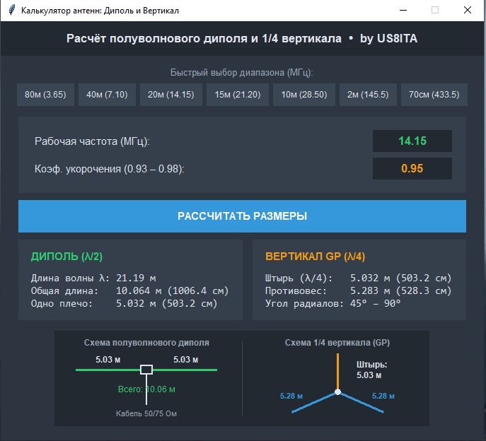
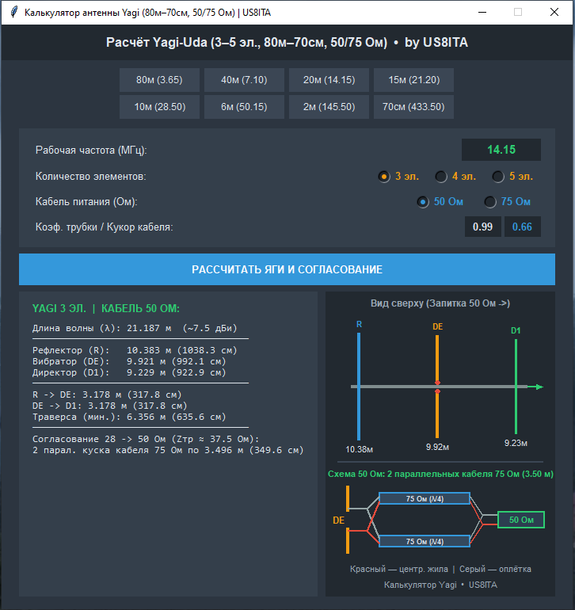
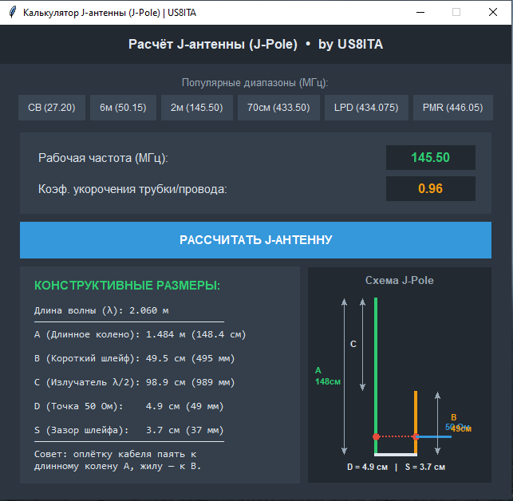
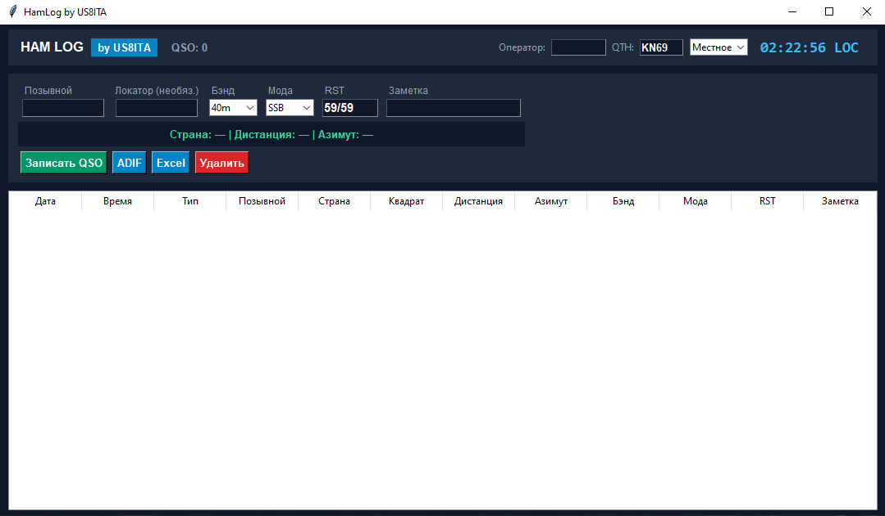
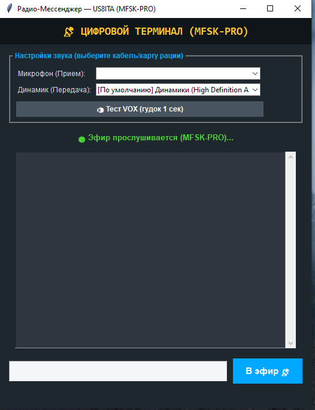

Наглядная утилита для быстрого расчета геометрических размеров классических проволочных и штыревых антенн — полуволнового диполя (λ/2) и четвертьволнового вертикала GP (λ/4).

Нажмите на картинку для увеличенияКалькулятор для проектирования направленных антенн «волновой канал» (Yagi-Uda) на диапазоны от 80м до 70см с расчетом согласующего устройства.

Нажмите на картинку для увеличенияСпециализированный калькулятор для изготовления популярной всенаправленной антенны J-Pole из трубки, провода или двухпроводной линии.

Нажмите на картинку для увеличенияЛегкий и быстрый электронный аппаратный журнал (логгер) для повседневной работы в эфире и полевых выездов.
.adi (для LoTW, eQSL, QRZ) и таблицы Excel в один клик.
Нажмите на картинку для увеличенияПрограмма-пейджер для передачи и приема текстовых сообщений по радиоканалу через звуковую карту ПК и трансивер/радиостанцию (цифровой режим MFSK).

Нажмите на картинку для увеличенияMIC+GNDSPK+GNDMIC+ (3.5 мм) ➔ через конденсатор 1–10 мкФ на Выход Динамик/Наушники ПКSPK+ (2.5 мм) ➔ на Вход Микрофон ПКGND (оба штекера) ➔ на Общий (GND) ПКВопросы по работе калькуляторов антенн, аппаратного журнала HamLog, настройке MFSK-пейджера и предложения по новым функциям: